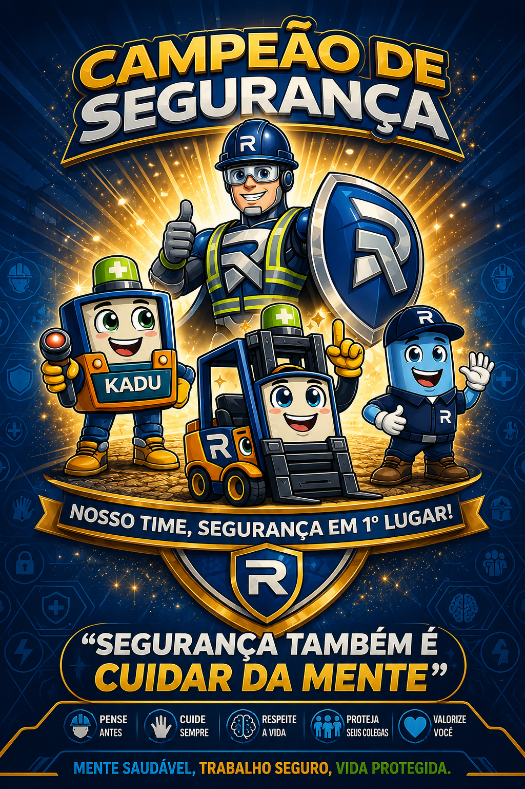

🛡️ Guardiões da Mente Segura
Segurança também é cuidar da mente • Saúde Mental • Fatores Psicossociais • NR-01
Identificação da Equipe
Pontuação da Equipe
Equipe atual:
---
Total de pontos:
0 pts
Área ADM
Visualize quem fez, contrato, setor, turno, operação e pontuação.
 Latito • Energia Segura
Latito • Energia SeguraFadiga e Sono
Missões para reduzir cansaço, exaustão e perda de atenção.
 Kadu • Equilíbrio Emocional
Kadu • Equilíbrio EmocionalEstresse e Apoio
Missões para fortalecer respeito, acolhimento e cuidado coletivo.
 Renauxito • Atenção Plena
Renauxito • Atenção PlenaFoco e Segurança
Missões para melhorar percepção de risco e comportamento seguro.
Missão do Dia
Clique em um mascote para gerar uma missão.
Check-in: Como estou hoje?
Escolha uma opção. O objetivo é cuidar da equipe sem exposição negativa.
Quiz da Segurança Mental
Mural “Valeu, Parceiro!”
Reconhecimentos Recentes
Ranking das Equipes
Painel ADM — Registros
| Data | Nome | Contrato | Setor | Turno | Operação | Pontos |
|---|